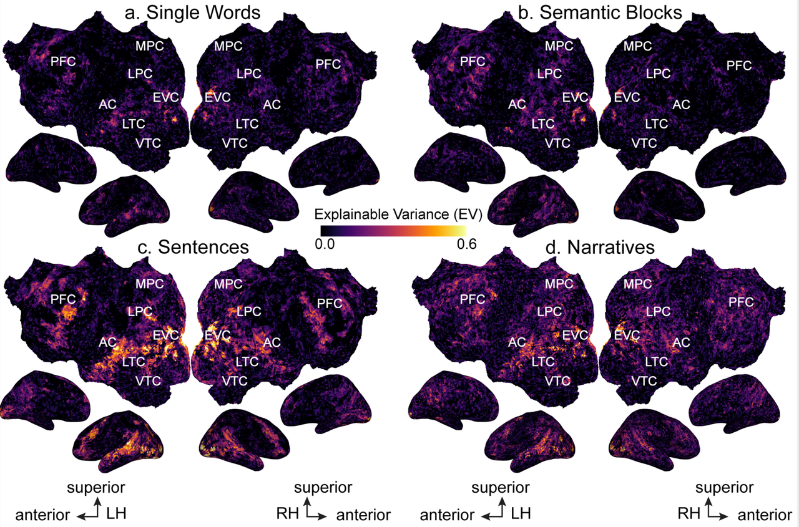
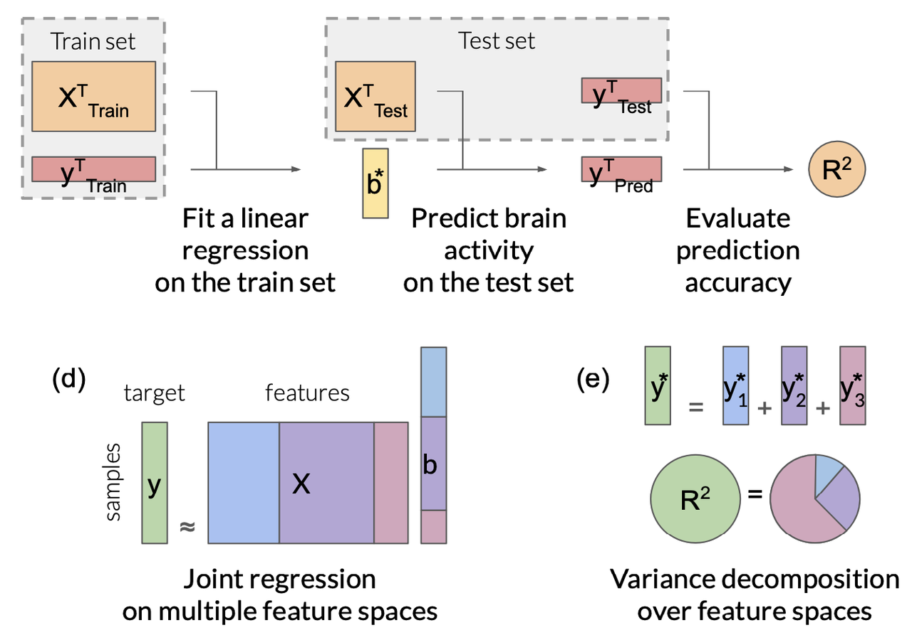
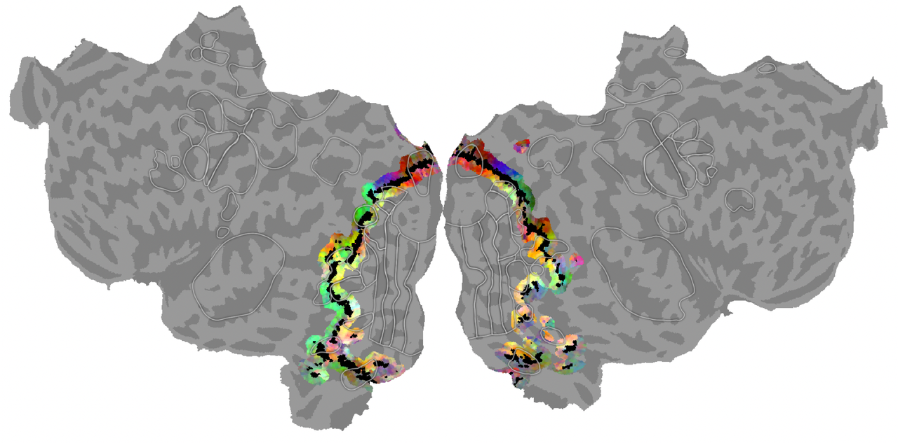
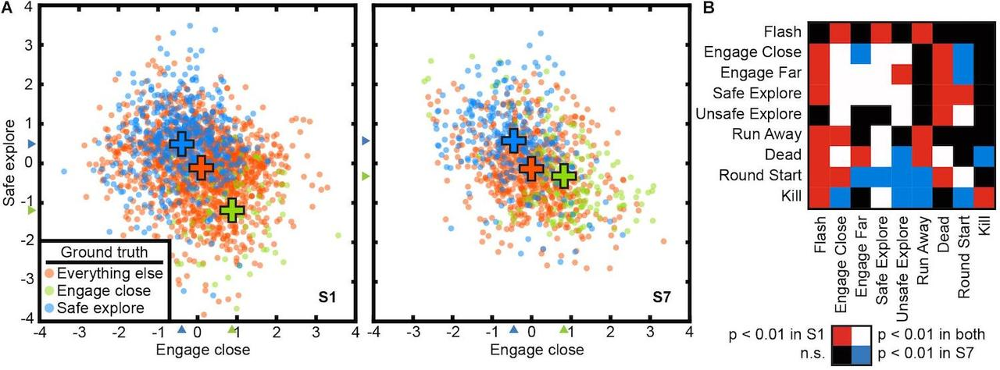
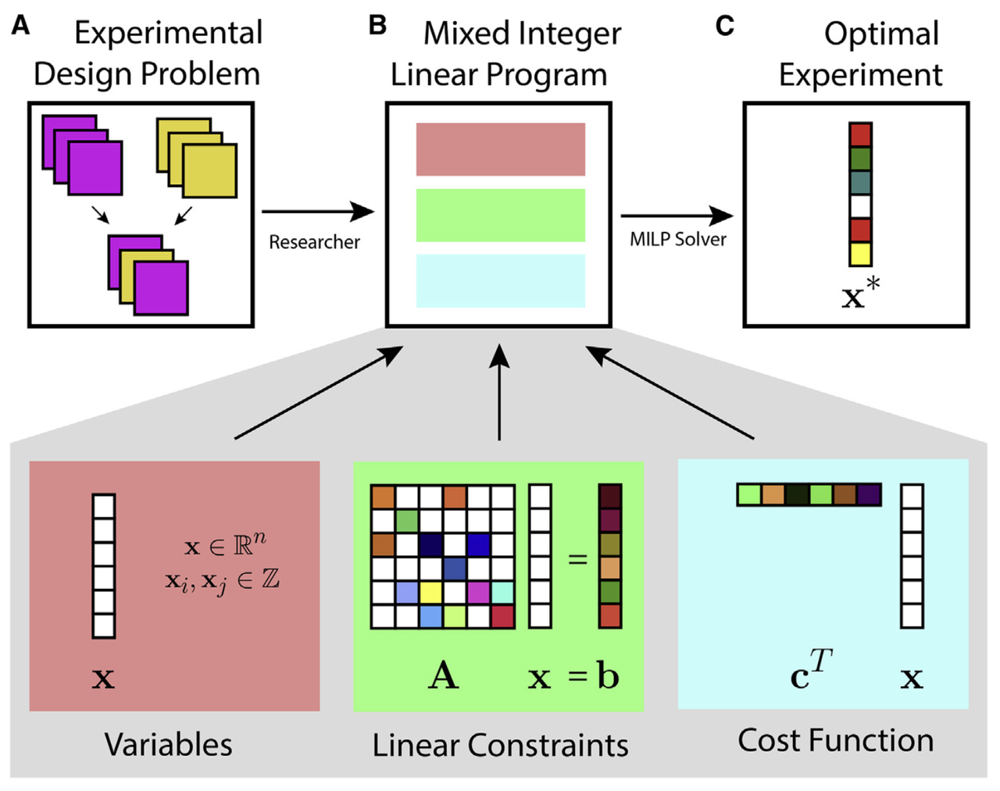
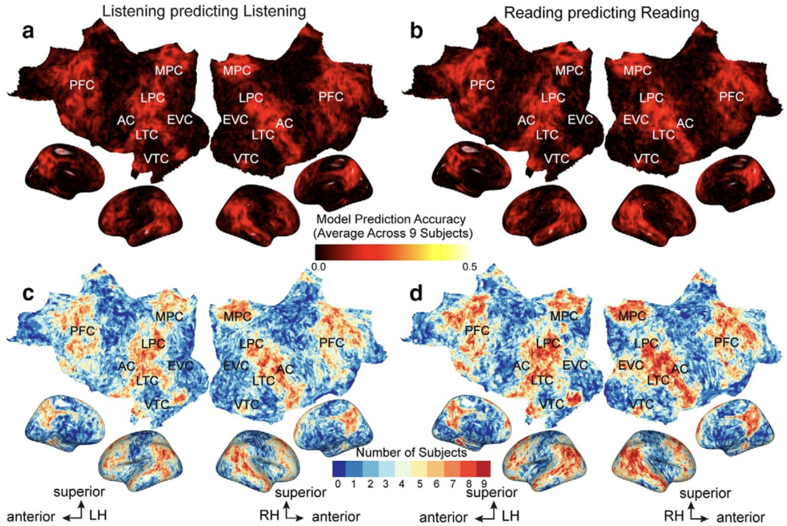
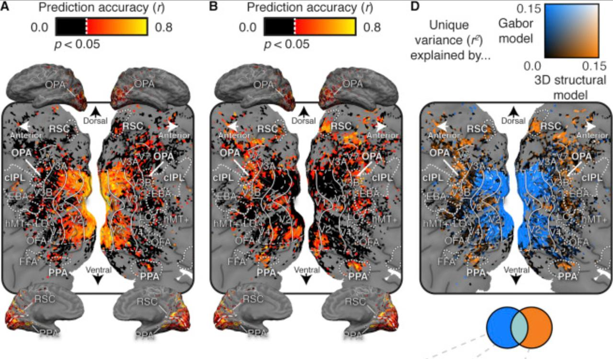
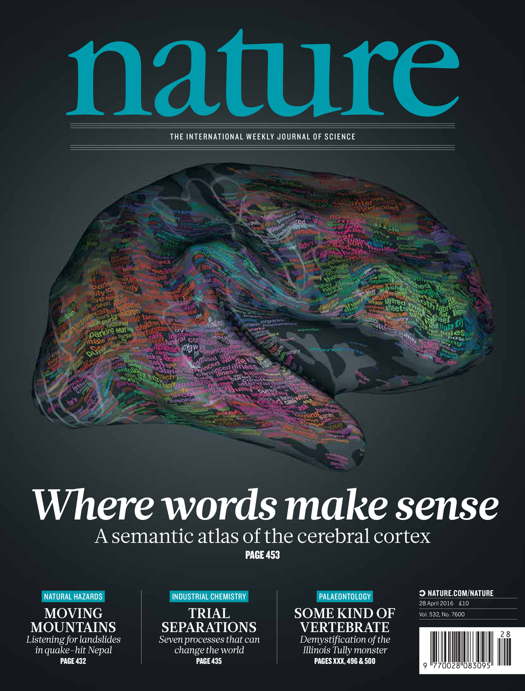

Papers
|  | Semantic representations during language production are affected by context (Deniz et al., J. Neuroscience, 2023). Context is an important part of understanding the meaning of natural language, but most neuroimaging studies of meaning use isolated words and isolated sentences with little context. In this study we examined whether the results of neuroimaging language studies that use out-of-context stimuli generalize to natural language. We find that increasing context improves the quality of neuroimaging data and changes where and how semantic information is represented in the brain. These results suggest that findings from studies using out-of-context stimuli may not generalize to natural language used in daily life. |
|  | Feature-space selection with banded ridge regression (Dupre la Tour et al., Neuroimage, 2022). Encoding models identify the information represented in brain recordings, but fitting multiple models simultaneously presents several challenges. This paper describes how banded ridge regression can be used to solve these problems. Furthermore, several methods are proposed to address the computational challenge of fitting banded ridge regressions on large numbers of voxels and feature spaces. All implementations are released in an open-source Python package called Himalaya. |
|  | Visual and linguistic semantic representations are aligned at the border of human visual cortex (Popham et al., Nature Neuroscience, 2021). The human brain contains functionally and anatomically distinct networks for representing semantic information in each sensory modality, and a separate, distributed amodal conceptual network. In this study we examined the spatial organization of visual and amodal semantic functional maps. The pattern of semantic selectivity in these two distinct networks corresponds along the boundary of visual cortex: for visual categories represented posterior to the boundary, the same categories are represented linguistically on the anterior side. These results suggest that these two networks are smoothly joined to form one contiguous map. |
|  | Voxel-based state space modeling recovers task-related cognitive states in naturalistic fMRI experiments (Zhang et al., Front. Neuro., 2021). As of 2016 Complex natural tasks recruit many different functional brain networks, and we understand little about how such tasks qre represented in the brain. Here we present a voxel-based state space modeling method for recovering task-related state spaces from human fMRI data. We apply this method to data acquired in a controlled visual attention task and a video game task. We show that each task induces distinct brain states that can be embedded in a low-dimensional state space that reflects task parameters, and that attention increases state separation in the task-related subspace. |
|  | Design of complex neuroscience experiments using mixed-integer linear programming (Slivkoff and Gallant, Neuron, 2021). This tutorial and primer reviews how mixed integer linear programming can be used to optimize the design of complex experiments using many different variables. The approach is particularly useful when designing complex fMRI experiments --such as question answering studies--that aim to manipulat and probe many dimensions simultaneously. |
|  | The representation of semantic information across human cerebral cortex during listening versus reading is invariant to stimulus modality (Deniz et al., J. Neurosci., 2019). Humans can comprehend the meaning of words from both spoken and written language. It is therefore important to understand the relationship between the brain representations of spoken or written text. Here, we show that although the representation of semantic information in the human brain is quite complex, the semantic representations evoked by listening versus reading are almost identical. These results suggest that the representation of language semantics is independent of the sensory modality through which the semantic information is received. |
|  | Human scene-selective areas represent 3D configurations of surfaces (Lesroart et al., Neuron, 2019). It has been argued that scene-selective areas in the human brain represent both the 3D structure of the local visual environment and low-level 2D features that provide cues for 3D structure. To evaluate these hypotheses we developed an encoding model of 3D scene structure and tested it against a model of low- level 2D features. We fit the models to fMRI data recorded while subjects viewed visual scenes. Scene- selective areas represent the distance to and orientation of large surfaces. The most important dimensions of 3D structure are distance and openness. |
|  | Natural speech reveals the semantic maps that tile the human cerebral cortex (Huth et al., Nature, 2016). As of 2016 (when this paper appeared) little of the human lexical-semantic system had been mapped comprehensively, and the semantic selectivity of most regions was unknown. We collected fMRI while subjects listened to narrative stories, and recovered lexical-semantic maps by voxelwise modeling. We showed that the semantic system is organized into intricate patterns that seem to be consistent across individuals. We then used a generative model to create a detailed semantic atlas. Our results show that most areas within the semantic system represent information about groups of related concepts, and the atlas shows which concepts are represented in each area. |